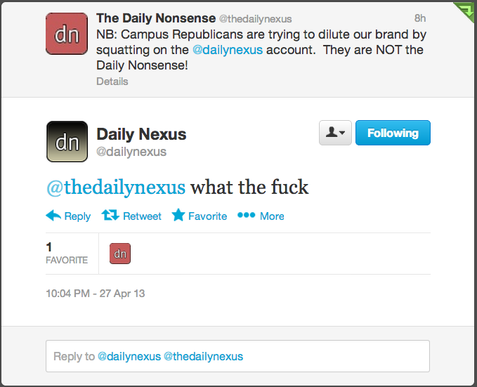

“I could manure my garden with the contents of that rag” — Rita Skeeter
Halloween Comes Early at the Nexus
Dr Edwin Feliciano, a self-proclaimed “psychiatrist” at UCSB, today appears to be attempting a séance in the pages of the Nexus, and reports to us a story told by the dead. Let us refer to the ghostly narrator as “Edwin”:
“What’s one pill, man?” said my friend. “People take six of those a day for pain.” I looked at it. It was white, oval-shaped and promised a good time. Two hours later I was in bed, unable to breathe. My friends thought I was just passed out—something that happens a lot at college parties. Hell, I had seen it so many times too! Why would something go wrong then?
It shouldn’t come as a surprise that Edwin isn’t the brightest bulb, but it’s rather alarming that Dr Feliciano doesn’t pause in his spirit-channeling to point out that there are rather a lot of reasons why something would go wrong when a person passes out at a party. I can only assume that the good doctor knows something we don’t (and I guess that’s to be expected, given that he’s the one who can commune with the dead).
When the doctors discussed my “case” after I died, one doc said, “This is outrageous. Too many kids die from this. How stupid can a person be?” I was angry, but I hung around and listened to their “expert analysis.”
“Expert” is rightly enclosed in quotation marks, because these doctors probably don’t even believe in ghosts. But more interesting are the quotes around “case”. What is Dead Edwin trying to tell us? Was there no real case? Let us proceed with caution, dear reader.
The dead man’s story proceeds with some bizarrely pedagogic ruminations on his so-called case, and the claim that “what I learned may help you stay alive.” That’s a rather strange thing to tell a doctor, but Edwin Feliciano apparently doesn’t realize that a passed-out person might be in trouble, so I suppose he could use the advice.
As the narrative proceeds, though, a careful reader gets the impression that this is not the monologue of a normal (if deceased) 19-year-old:
The rest of the explanation got too technical for me. By then, I didn’t care to understand the “physiological” causes of my death. It boiled down to this: there is a difference between what you feel psychologically—relaxed, buzzed, happy—and what your body is experiencing internally. While it may be easy to gauge your mood, alcohol and drugs are accumulating in your system at a rate faster than your body can metabolize them. The fact is that the effects are delayed, so when you have one more shot, or an Adderall, or a Norco, you’re creating a unique, often deadly cocktail in your body. That’s what happened to me. I got the message too late, which is, very simply, that mixing drugs will kill you, period.
I should have stayed home watching the Sixers play the Knicks and having a few beers with my friends. I didn’t, as you now know, but you have a choice.
This sounds less like the lament of a soul who is mourning the loss of its body than a school psychiatrist who is insulting the intelligence of his patients by making obviously false claims that lead students to dismiss his advice—and therefore be more likely to make risky decisions—instead of explaining accurately how common drugs interact and urging young people to educate themselves about the effects of what they put in their bodies.
I guess ghosts don’t exist, then. They’re just another thing Dr Feliciano made up to scare us.
Violence broke out in Isla Vista on Trigo Road Friday, April 26, following one student directing homophobic comments toward another, reminding the campus community of the importance of creating a safe climate in and around campus.
…
[T]he student who had made the homophobic comments began “kicking [the victim’s] head repeatedly and started stomping on him,” said Aljawad. “I just wanted him to not kill the guy, so we called the cops.”
This incident raises not only issues of campus climate but also the dismissive attitude the police often take toward crimes against minority groups. Law enforcement is perceived by many to take the side of those perpetrating hate crimes, instead of those victimized by them.
In the wake of this story, the Nexus was not silent. In today’s op-ed, Emile Nelson and R. Pengsta have a message for the GSRM community at UCSB:
Smoothly articulating the principles behind the mission statement of the Nexus, Nelson and Pengsta bravely defend commonsense heterosexual values against the “compulsory homosexuality” taught in liberal universities such as UCSB. They also unapologetically reaffirm the Biblical truth that men and women are irredeemably different creatures, each incomprehensible to the other.
Nelson and Pengsta therefore present their polemic as a dialogue, with Pengsta as the straight woman speaking to other straight women who chase after men, and Nelson reprising his role as the misogynistic fuckwit who slut-shames his female peers. Discussing the Serious Problem of having sex on a first date, Nelson pontificates finely:
[I]t’s risky to light the candles and whip out the Marvin Gaye on day one for a couple of reasons.
Sleaze factor: You can’t help but wonder that if she’s ready for me on day one, who else is getting this kind of treatment?
The Natural Order: It’s much easier to become friends before the first hump than it is to try to go back and get to know each other afterwards. You might feel satisfied, but you’ll probably never know if she shares your love for Batman.
Nelson is of course perfectly correct that if a woman has had sex with multiple (male!) partners she’s a worthless whore, but that point has been made more eloquently elsewhere. His second itemized bit of 19th-century wisdom is rather more original.
It is a truth long-forgotten that men and women can only engage in normal relations (“be friends”, to use the jargon) when they are not and have never been engaged in abnormal relations (have not “fucked each others’ brains out”)—and perhaps not even then! Once the man has taken the woman as his, she is no longer his equal and it is inappropriate and emasculating for him to “talk to her” and “care about her opinion” concerning Batman and similarly intellectual subjects.
So, by-definition-heterosexual Ladies: do you want to talk about Batman with Emile Nelson? Then for the love of God, don’t have sex with him. But don’t have sex with anyone else either, since that would make you a ruined trollop, unworthy of his attention.
Maybe just don’t talk to Emile Nelson.
If Thomas Friedman and Matthew Yglesias Had a Child, That Child Would Be Mark Strong
There is nothing like some bold, contrarian thinking to shake up the stale Washington consensus. Noted wanker Thomas Friedman is perhaps the finest practitioner of this art, the apogee of his career being his bold and contrarian suggestion that Israel terrorize the Palestinian population. This quite new idea took many by surprise, but has since been adopted by the IDF to great effect. Matthew Yglesias is part of a younger generation of wankers, but has risen rapidly in stature since his inspired defense of collapsing buildings on poor people in exchange for cheap denim.
Though these wankers will eventually retire and die, there is no shortage of young wankers willing and ready to replace them, as Mark Strong proves today. Faced with the classic tension between “optimists” and “pessimists” and their disagreements over whether things are getting better or worse, Strong makes the brilliant proposal that we simply stop caring about right and wrong:
Whereas a pessimist sees the glass half-empty and an optimist sees the glass half-full, a pragmatist simply observes the glass and its contents and determines its maximum utility. Moral judgments are cut neatly out of the evaluation. The situation is neither good nor bad; the situation just is.
This is a truly divine bit of wanking. Strong pushes aside the sentimental fools who cling to “principles” and presents his pseudo-utilitarian neoliberalism as the detached, rational worldview, unsullied by any sort of emotional attachment to the millions oppressed by his beloved “bipartisan consensus”.
Near the end of his pitch for The World is Really Fucking Flat, Or: I Want a Big House Like Tom Friedman, Strong shows that his writing is just as horrific as that of his spiritual father:
While we’re all entitled to our respective opinions, there is no productive value in the belief that humanity is headed for a cliff on a runaway train. The same goes for plugging our ears with wax and tying ourselves to the mast. Ship, train, plane or blimp—whatever comparative vessel you prefer, if we don’t do something, it’s going to crash.
Mark Strong’s future looks bright. The rest of us are fucked.
Stop Making Sense (feat. Ben Moss)
Daily Nexus writer Ben Moss, having failed to think of anything interesting to write about in his Tuesday column, resigned himself to authoring a thinkpiece on clickbait:
I was mindlessly browsing the internet the other day, as one does, and I came across an article promising to reveal the 21st century’s sexiest career. I must say, I never expected Yahoo! Finance to be so infatuated with “data scientists.”
The more I think about data science, the more I see its sexiness is obvious to our place in time. Data is no longer boring, as I thought it once was. Just look at UCSB. Here, our friends fight bitterly to study accounting, we’re asked to fill out surveys every time we check our emails and our perm numbers are (as ugly as it sounds to say) crucial to our identity as students.
Nothing turns Ben on more than turning off his roommate’s alarm in order to get a spot in ECON 3B; it’s positively orgasmic. And the second-best part of his day is when he hears that SurveyMonkey cares so much about his opinion that it reaches out to him in person! (This is because nobody else does.)
Next, Ben addresses the question of why he gets so horned up thinking about MySQL tables:
My take on the paradigm shift is a little different. I think it’s about the role data has played in our growing up and the way we use it so extensively now. After all, we’ve all sent off a meaningful email or an emotional text. We’ve all proudly fashioned our Facebook profiles to mean something about who we are. In one way or another, we’ve all had a heart-to-heart in the ones and zeroes of computer programming.
Ben is a living testament to the truth of Marshall McLuhan’s famous dictum that “the medium is the message.” He is unable to separate the content of what he writes from the medium in which he composes it. While researching this column, an anonymous source provided me with one of Ben Moss’ sexts, and you can see for yourself what living in this digital environment has done to Ben’s ideas of romance:
for ( var i=0; i < 5; i++ ) {
if ( i % 2 === 0 ) {
alert("I love you");
}
else {
alert("I love you not");
}
}
(His deep immersion into digital media has also apparently erased the distinction in his mind between “data” and “the ones and zeroes of computer programming.”)
In the conclusion of his essay, Ben finally recognizes his digital addiction and vows to make a change:
But I do think we need to make a practice of diplomacy, as it may not come as naturally in the digital age. There’s still something intangible and more effective about spoken interaction, especially when something is being negotiated. When emailing, you have to concern yourself with precision in language, exactness in tone and concision in length. Moreover, emails are easy to delete. Negotiating in person can actually save time and grief because arguably the human face is so innately appealing that it’s hard to reject.
Personally, I’m actually trying to include less and less meaning in my emails. I’m trying to make them vague and unclear. The less I send electronically, the less I find myself attracted to data, the less I leave myself open to digital criticism, the less—in fact—I foresee a future in cold, robotic shades.
As if anticipating this very piece, Ben Moss here declares his intention to stop making sense in order to avoid the relentless “digital criticism” that last week led the Nexus to surrender to the Nonsense and become a subsidiary of our media empire, a misbehaving pet that we continue to scold. We look forward to publishing Moss’ next column, which will consist of epic poetry written only with consonants.
As of press time, Ben replied to his mother’s text about his phone bill with “Forever six times have I killed the wurm. Life is death and worse.”
Batman is Best at Everything, Including Fighting the Matriarchy
It has been more than four decades since the last Men’s Rights Activists were routed by Misandrists during the Tit Offensive. Since then the feminist dystopia has ruthlessly victimized men, forcing them into poverty and making the wearing of the fedora a daring and subversive act.
there are few things [worse] than a girl who is brave enough to take some control in a relationship. This means saying what you like, how you like it, when you like it, where you like it and not being afraid to be the initiator and get nasty-specific with your boy.
The modern woman, drunk on the theories of Lindy West and other radical feminists, has come to believe that it is her own desires that matter, rather than those of male columnists in shitty college newspapers. They are tragically mistaken, of course, and not only are ruining the happiness of their male slaves but are in fact acting contrary to their own interests. Emile insists that in order for a woman to have any chance of not dying alone and unloved, “you need to be completely naked in each sense of the word every time you show up to play with your man.”
Thus “boobies” is the first of the “words that make men melt.” When Jason Collins, the NBA player who came out on Monday, was asked what makes him melt, he answered—without hesitation—“boobies”. Upon being threatened with sexual assault by Lena Dunham, Collins dissolved into his constituent elements.
The second key word identified by Emile Nelson is “beer.” Discussing beer, Nelson writes:
As much as guys like to see a lady squeal, it’s not always enough to go home thinking “yeaaa I bet she feels good” while armies of ninjas (infamously known as blue balls) slash up your downstairs business. I don’t mean to say that you should never ever let your man go home unfinished, but please, if you’re in a sexual relationship, don’t let his little friend’s satisfaction fall to the wayside on a regular basis.
This is a novel argument that, for men, sex with a women is an act of self-defense. When asked what his greatest fear is, Jason Collins answered, “the little ninjas in my balls, definitely.”
The third word that, when uttered, imbues men with the power to fight misandry is “Batman”:
Every single boy has [the same] dreams of [the same] freaky ways he wishes he could get it on and most of them are harmless and exciting. The problem is that far too often, these fantasies are disregarded because the act itself is “good enough.” I’m here to tell you that if you let him wear his Batman mask and talk in the Dark Knight’s voice as he explores your Batcave with his Batmobile, you will have given that man a memory to be cherished until the end of time.
Jason Collins confirmed in his Sports Illustrated interview that his favorite sexual roleplaying scenario is “anything involving Batman.”
Emile Nelson ends his manifesto with a final warning to any women whose misandry has not been fully eviscerated by his wise words:
Men are fairly simple creatures; take care of them and they’ll take care of you. Just remember, ladies, trashy has the word “trash” in it for a reason. Keep it classy until the door closes.
In other words, show up naked, but don’t, because that would mean you’re a slut.
*fist pump*
An Unlikely Friendship
We at The Daily Nonsense have not been particularly kind to the time-traveling bandits behind the pseudo-publication known as “The Daily Nexus”. Our writers have referred to them as a “cabal of hacks” who publish “racist garbage”. So it was not particularly surprising that they eventually made an official response. What was surprising was when and how this response was made, and the heartwarming ending to the ensuing affair.
The Daily Nonsense was launched yesterday to much acclaim. The most evident testimony of its immediate impact was the reaction from a group of campus Republicans, who went back in time over 40 years to start a competing publication. These scoundrels founded “The Daily Nexus” in order to undermine our credibility and dilute our brand. For decades they prepared for the day when they would use their clout to strike the Nonsense down on the very day it launched.
Late that night, they struck. We at the Nonsense knew what was coming as soon as the Nexustweeted a link to an article titled “Seth Rogen enjoys being in control”. We were threatening the Nexus’control over the UCSB news cycle, and they were not pleased:
Screenshot taken by our Managing Editor and feline mascot @dunndunndunn
After 40 years of hegemony the Nexus was suddenly experiencing real competition. Having become so accustomed to being on top, they panicked and lashed out. It became clear that they were confused, no longer sure how to respond:
After some hasty negotiations, it was decided that the Nexus would become a subsidiary of the Nonsense. As part of the agreement, they began retweeting our content:
That is rather inflammatory! In addition, the article in question was found, on closer examination, to be a work of biting anti-racist satire. We therefore apologized to Mark Strong and the Nexus for the remarks of our feline mascot, and do so publicly again.
That misunderstanding aside, all is well between us:
The future looks bright for the joint Nonsense/Nexus. Going forward we will be officially merging into a single publication known as the Noxious. Thank you again for your support.
“Goodness!” you might be saying. “How could dear Mark write a column called ‘Politically Incorrect’ without knowing what that means? Surely the Nexus, of all student newspapers, is rigorously dedicated to accuracy and would never print idiotic bullshit that flies in the face of basic decency under the guise of bravely opposing conventional wisdom?”
Strong reassures us somewhat in the next paragraph by exhibiting his subtle analytical skills:
That’s a question I’ve been asking myself for a while. With 18 articles claiming the title, you’d think I’d have figured it out by now. But the question is actually twofold. “Politically Incorrect,” the column, is not the same thing as politically incorrect, the concept, any more than a house is the same as its foundation.
This really is a crucial distinction. Mark Strong’s eighteen episodes of concern trolling are in fact not identical with a term that is widely used to make various forms of bigotry socially acceptable.
Nor is his column identical with the television show once hosted by fellow freethinker Bill Mahar, the title of which Strong honors by using as the title of his own column. (“Honors” here is the politically correct term for “steals”.)
It soon becomes clear that our faith in Mr. Strong was not misguided, as he demonstrates a keen understanding of how “politically incorrect” is used to perpetuate racism, sexism, and other systems of institutional discrimination in a society where outright hate speech is no longer acceptable:
For the sake of this column, [political incorrectness is] about delivering a take on an issue free of the usual constraints and pretensions of social etiquette. We all have a stern and Sharpie-wielding soldier stationed somewhere between our mouths and our brains, ready to scribble out any statements that could leave us vulnerable to the criticism of others. For people like Mel Gibson and Michael Richards, that guy is doing us all a service. But he’s a conservative censor, strictly by the books, and his indiscriminate scribbling often leaves those of us with actual points silenced just the same as those who blame their personal shortcomings on “the Jews.”
This is the problem with political correctness. For all its promise of tolerance and progress, it fails to make the crucial distinction between the reasonable and the reasonless. A white supremacist and a white philosopher might share nothing in common beside their use of the word “nigger,” but from a politically correct perspective, this is enough to set them equal. When it comes to being politically correct, context is thrown carelessly out the window.
Mark Strong here excellently brings out how racism can be given a pass when in the correct context. It is difficult indeed to defend the writers at Taki’s Magazine, but if you’re a college professor of Philosophy (a discipline that definitely doesn’t have issues with diversity) you can claim that you’re speaking in an “academic context” and that you are really just being coolly analytical and why are these students walking out of your class?
Another example that Strong might have mentioned is the “hipster racism” of Lisa Lampanelli, though her delivery was so artless that even accidental racist Lena Dunham distanced herself from the “joke”:
Our Nexus writer concludes, tongue firmly in cheek:
So what is politically incorrect? We could come up with Webster-worthy definitions for the next 50 years, but none of them would ever quite hit the nail on the head. It’s the line between racism and reality, the comment you’d think but never say, the punch line that makes the audience groan. It’s the aborted child of every argument, the thing you’d rather drown in the tub than raise to call your own, and more often than not, it’s the pure, unadulterated truth.
And with that nod to Daniel Tosh, Mark Strong makes it quite clear what the pure truth is:
@tanehisi “politically incorrect” itself is a politically correct way to describe oppressive ignorance at best and sheer bigotry at worst.
Critical discussion of a metaphysical thesis recently proposed by Mr. Robin
The Daily Nexus is not known for publishing cutting-edge research in analytical philosophy, but on the 2nd of this month Mr. Jeffrey Robin authored a startling piece in which he advanced a very novel claim of just this sort. Here is the claim in context; just prior to the paragraph I quote below, Mr. Robin suggests that it is no use pondering whether the homosexual poses an existential threat to the marriage institution, given that marriage has been irredeemably fucked for some time.
The shift in attitude and treatment of marriage has come both from society and governmental action. For too much of our history, we have been concerned about where and when people are allowed to sit at the lunch counter or on a bus. This, in turn, has lead to an attitude that everyone has a right to sit anywhere they please. Indeed, if nothing is true than everything must necessarily be permitted.
I do not wish to downplay the importance of what Mr. Robin has to say in the first three sentences of this passage—I entirely share his belief that allowing the Negro to sit anywhere he likes was one of the great stumbles in our nation’s history—but I am here concerned with the last sentence. More precisely I am concerned with the following conditional: “if nothing is true than everything must necessarily be permitted.”
How remarkable! If nothing is true than everything must necessarily be permitted. The profundity of this statement cannot be overstated. In order that we may attempt to grasp it, a formalization is in order:
Here Tx means x is true, Ay means y is an action and PE is the permissibility operator.
Something of a conundrum confronts us if we attempt to move from left to right along this conditional. The antecedent is only satisfied if nothing (presumably no proposition) is true, but if the very conditional proposition if nothing is true than everything must necessarily be permitted is true, then the antecedent is not satisfied.
Can we learn anything by moving right-to-left? It seems plausible (even for a Communist such as myself!) that there are some things which are not permissible: perhaps obstructing the overthrow of the bourgeoisie, or being openly racist in a college newspaper in 2013. In any case, Mr. Robin certainly seems to believe that there are some things that are impermissible: his invocation of this very conditional is part of an attempt to discredit his political opponents by painting them as moral relativists or, worse, as nihilists. So if it’s not true that everything is permissible, then by modus tollens it is not true that nothing is true.
Mr. Robin has established that at least something is true. But unfortunately for him, the undeniable truth that he has established in his article seems to be this one: that Mr. Jeffrey Robin is an imbecile.